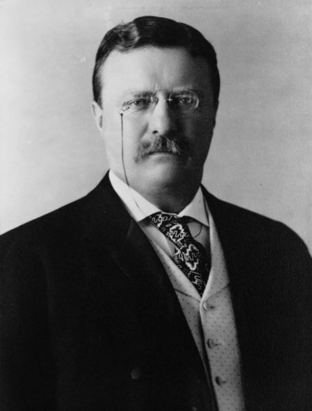
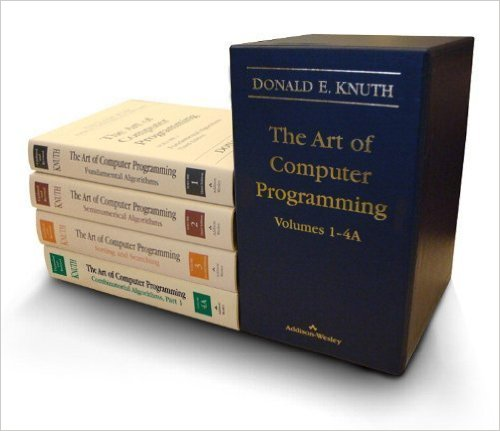
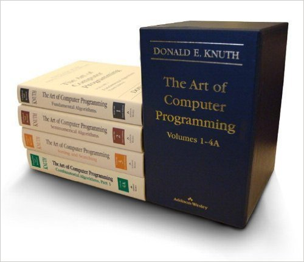

Quotes to live your life by
Wise words from Hopper, Roosevelt and Knuth
Ed Campbell (@esc24)
try:
x = my_dict[key]
except KeyError:
# handle missing key
if key in my_dict:
x = my_dict[key]
else:
# handle missing key

 
